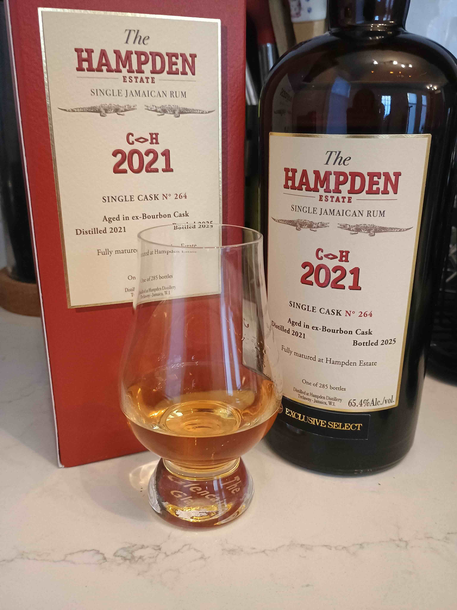

Reviewed September 4, 2026

This is the Hampden Astor select C<>H 2021 4-year single cask. Aged in an ex-bourbon cask at Hampden Estate and bottled at 65.4% ABV. One of 285 bottles. Astor Wines exclusive. Reviewed neat and with some water in a Glencairn.
On the nose, I get grilled pineapple, caramel, vanilla, and a sort of non-specific blend of overripe tropical fruit. There's also an industrial smell that I put somewhere between rubber cement and plastic. I love the way this smells, especially the lingering aroma you get just from opening the bottle.
On the palate, the pineapple is still there, and lots of caramel. I get the overripe tropical fruit, mostly berries. The industrial notes are still there but I find that they turn into something tart and almost bright that lifts the flavor in an interesting way. When I've had the Papalin 5-Year high ester blend, I get a great pineapple upside-down cake note, which I now believe comes from C<>H after tasting this bottle. The finish lasts forever. I tasted this hours later.
For fun I decided to try this alongside the HGML 2017 single cask, which I previously reviewed. The difference is quite noticeable. The HGML is very very potent, of course, but compared to the C<>H I get basically no sort of "industrial", non-food-like aromas from the HGML. I imagine that's due to the HGML being aged twice as long? The HGML is also more tart and sweet, like blueberry compote. I'd say that the C<>H is brighter, with the industrial notes pulling it in that direction. They're both very hot, as I'd expect given the proof. I proofed both down to around 50% ABV after trying them neat. I think that's the sweet spot for me.
I got this on pre-sale for $159. After the pre-sale it'll go for $199. I really don't have a great sense of what this kind of rum should cost. But this is terrific and I'm happy with the purchase. I can definitely see this being one I reach for when I want a treat. It's fantastic as a planter's punch. I can also imagine this being a great component in a split base, for a Mai Tai or really anything where you want a tropical accent.